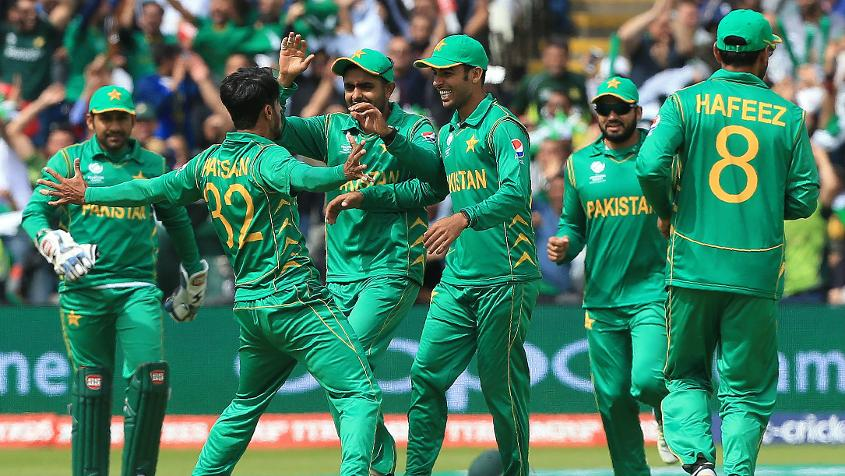

#CT17 Eng v Pak Preview
#CT17 Eng v Pak Preview
Advantage England, but that counts for little
Pakistan is riding the crest after its late charge into the semi-final; if it is switched on, it can prove a handful.

Match 13 Preview
Semi-final 1: England v Pakistan
Date: Wednesday 14 June 14 2017
Cardiff Wales Stadium, Cardiff
HEAD-TO-HEAD81 matches; England 49 wins; Pakistan 30 wins; no result 2.
THE FORMSo here they are – the team that everyone suspected would make it to the final four, and the team that few expected to come this far. England has lived up to the pre-tournament hype of being the favourite. Pakistan too had lived up to its own tag, of being unpredictable.
It’s the clash of these two tags that makes Wednesday’s game impossible to predict. If this was a five-match series, England would certainly start favourite. But this is a matter of just one day, and everybody knows what Pakistan is capable of doing on its day.
Recent form matters to one side, and hardly bothers the other. England thrives on momentum. Pakistan has no such worries. It could go two years without winning anything, sneak into a world tournament as the last team, lose the first game heavily against its arch rival and yet make it to the semi-final.
It’s a clash of one team’s batting against the other’s bowling too. Three of England’s top four batsmen have two scores each in excess of 50 in the tournament. Their No. 5 – Ben Stokes – has batted twice and made 48 and 102*. The only worry is Jason Roy at the top, but England id set to correct that too with Jonny Bairstow taking guard in the nets on match eve straightaway. Roy was, meanwhile, almost sadly banished to picking up balls near the boundary rope.
If there’s one team you can count on to stop this England line-up, it’s Pakistan. But it also depends on which Pakistan turnd up. If the Pakistan that played India – the one that bowled and fielded well below its best – makes an appearance, then there’s little to worry for England. If the Pakistan that played against South Africa and Sri Lanka does, the story might be different.
THE CONDITIONSThe pitch for the first semi-final is the same as the one used for Monday’s game. The wear and tear could mean a bigger role for spinners, although the short straight boundaries could negate the assistance. Could it mean Pakistan bring in Shadab Khan, the leg-spinner?